速览
这篇论文要解决一个很具体、也很要命的问题:块稀疏注意力省下了注意力计算,却没省下"挑哪些块"的开销。传统做法(BSA)要给每个 query 对全部 $N/C$ 个键块打一遍分,于是选择阶段总开销是 $O(N^2/C)$——注意力本身降成线性了,选块却还是二次的,在长序列上直接成为新瓶颈。作者提出的 PISA 用"键的金字塔 + 由粗到细的逐层 Top-K"把这个阶段压到每个 query $O(\log N)$、整段序列 $O(N\log N)$。
三句话读完
问题。块稀疏注意力分两步:先为每个 query 挑 $K$ 个键块,再只在这些块上算注意力。第二步是线性的,但第一步要对全部 $N/C$ 个块打分,整体仍是 $O(N^2/C)$。序列越长,这个"选块"越像新的全注意力。
做法。把键逐级均值池化成一个由细到粗的金字塔($C$ 个一组、之后每 2 个一组),然后反过来从最粗层往下选:每层只对上一层保留下来的块的孩子打分,保留 Top-$K$,再展开到下一层,直到叶块。每层候选数被 $gK$ 卡住,层级数只有 $O(\log N)$,于是每个 query 的选择开销是 $O(\log N)$。打分的度量从"子块均值的平均"换成"子块摘要上的 LogSumExp",论文用 Jensen 不等式给出了它夹在「均值平均」与「父块真实 LSE」之间的论证。
结果。418M / 1.47B / 2.67B 三个规模、100B token 预训练 + 10B token 16K 继续预训练下,语言建模损失与常识推理和 BSA、NSA、HiLS 相当;六个 containment 检索任务的平均分在稀疏方法里三个规模都最高;RULER 大海捞针平均分明显高于 BSA。选择延迟在 32K 之后反超 BSA,256K 快 9.95×。
背景:块稀疏注意力的两阶段与选择瓶颈
自注意力的开销随序列长度二次增长,这是长上下文建模最硬的墙。稀疏注意力的思路是让每个 query 只看一部分键,其中块稀疏(block sparse)这一类把键值按连续的块($C$ 个 token 一块)组织,好处是稀疏计算可以走规整的分块内核,而不是变成散乱的 gather。
论文把块稀疏注意力形式化为两个阶段。第一阶段给每个键块算一个摘要向量 $\bar{k}_i = f(K_i)$,均值池化或线性投影都行;对 query $q_t$ 与每个块算一个分数:
然后取分数最高的 $K$ 个块 $I_t=\mathrm{TopK}_K(s_t)$。第二阶段在这些块覆盖的原始键值上做标准注意力:
关键在最后一句:第二阶段每个 query 最多读 $KC$ 个键,$O(N)$ 就够;但第一阶段要为每个 query 扫完 $M=N/C$ 个块摘要,累计 $O(N^2/C)$。注意力省下来了,选块没有。
和已有方法的位置关系
论文用一张表把相关工作放进了"可训练/免训练 × 预填充复杂度 × 解码复杂度"的坐标系里。这张表值得逐行读,因为它同时说明了 PISA 的定位和它的对手是谁:
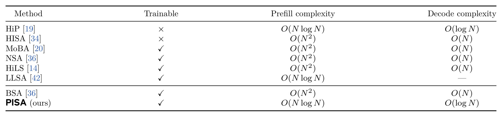
把这张表竖着看,结论很清楚:同时具备"可训练 + 预填充 $O(N\log N)$ + 解码 $O(\log N)$"的方法,表里只有 PISA 一行。$O(N\log N)$ 本身不是新东西(HiP 与 LLSA 都有),新的是把它做成一个可端到端训练的语言模型注意力层,并且给出解码路径的 $O(\log N)$ 保证。
观察:选择阶段为什么仍是二次的
把 $O(N^2/C)$ 拆开看很直观:每个 query 要看 $M=N/C$ 个块,共 $N$ 个 query,乘起来就是 $N^2/C$。分母上的 $C$ 只是把常数压小,不改变阶数。$N=256\text{K}$、$C=64$ 时 $\lceil N/C\rceil=4096$——每个 query 要做 4096 次块打分(推算),这正是长上下文里选块比注意力本身还贵的来源。
论文的出发点是:既然 $M$ 很大,那就别在叶块层平铺打分,而是先在一个"块数少得多"的粗粒度层上筛。粗层每个块覆盖的 token 多、块数少,筛完再只把幸存者的孩子展开——这正是 Figure 1 想表达的东西:
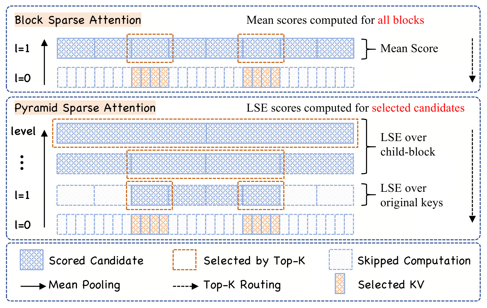
还有一处细节值得先记住:PISA 在每一层都问"这一层的候选数是不是已经不超过 $K$ 了?"如果是,直接全部保留、不打分。在粗层候选本来就少,$O(\log N)$ 层里最上面那几层几乎等于免费——这一点在后面的配置走查里会变成一个很漂亮的数字。
方法:金字塔键层级、由粗到细 Top-K 与 LSE 打分
4.1 由细到粗:建一座键的金字塔
层级是从精细往粗糙建的。第 0 层是原始键,$M_0=N$,每块就是一个 token;第 1 层是叶块,每 $C$ 个相邻 token 合成一块,于是 $M_1=\lceil N/C\rceil$;再往上每 $g=2$ 个相邻块合成一块:
每层的摘要由子块摘要均值池化得到,$\bar{k}_i^{(0)}=k_i$ 起步:
因为每一层的合并组大小相等,这个递推的结果就是"块内所有原始键的均值"。query 自始至终保持 token 粒度,不参与池化。
4.2 由粗到细:逐层收窄的 Top-K
选择方向与建塔方向相反。最粗层 $L$ 只有一个候选:
每层只处理上一层幸存块的孩子,候选规模被分支因子和预算双重卡住:
一轮走完,$I_t^{(1)}$ 就是最终参与注意力的原始键值块。因为塔高是 $L=O(\log N)$,每层候选又是常数上界 $gK$,每个 query 的选路开销就是 $O(\log N)$,整段序列 $O(N\log N)$。这就是标题里"log-linear"的全部来源。
4.3 LSE 打分:为什么不用均值
剩下的问题是:中间层的块没有"原始键 LSE"可用,只有孩子摘要,该怎么打分?论文的答案是分数由孩子摘要上的 LogSumExp 给出:
叶层因为 $\bar{k}_r^{(0)}=k_r$,这个式子退化成对原始键的精确 LSE。每个候选最多摊开 $g$ 个中间孩子、或 $C$ 个原始键,所以打分成本也是有界的。
论文用泰勒展开说明这个选择不是随手取的。对进入打分的一批 logit $z_1,\dots,z_m$,设均值 $\bar z$、方差 $\mathrm{Var}(z)$:
丢掉 $\log m$,一阶截断就是"只取均值",二阶截断就是"均值 + 半个方差",这正好构成论文的两个消融变体:
再往深一步,附录 A 用 Jensen 不等式给出了一个"夹逼"关系。设块 $B$ 有 $g$ 个等大小的孩子 $C_1,\dots,C_g$,孩子摘要与 query 的点积记作 $m_j$,父块归一化后的真实 LSE 记作 $F_q(B)$:
左边是 PISA-1 用的"均值平均",中间是 PISA 的分数(减去 $\log g$),右边是父块的真实 LSE。它说明:在孩子均值上做 LSE,比直接平均孩子均值更接近真实块质量,因为它保留并放大了孩子之间的差异;但它无法恢复每个孩子内部的方差,当孩子内部 logit 全相等时两端取等。
4.4 GQA 下的一次细微不一致
论文沿用 NSA 的做法:同一个 GQA 组内的 query head 共享同一组被选中的键块。PISA 把一个 KV head 下所有 query head 的 LSE 分数求和作为该块的分数:
但附录 A.3 指出,诊断实验里全注意力参考集是对块质量取平均,而 PISA 是对 query head 的 LSE 分数求和;即使 LSE 分数完全精确,这两种聚合规则也可能给出不同的块排序。这是一处论文主动披露的口径差异,不是错误,但读者看 Table 7 时应当知道。
系统:Triton 内核、IO 账本与配置走查
算法本身是"每层打分-取 Top-K-展开"的循环,朴素实现会在层与层之间反复读写中间候选,把省下的 FLOPs 又还给显存带宽。论文的应对是把中间若干层融合进一个内核,候选索引全程留在寄存器/共享内存里,并且不物化任何密集的 query–key 分数矩阵。
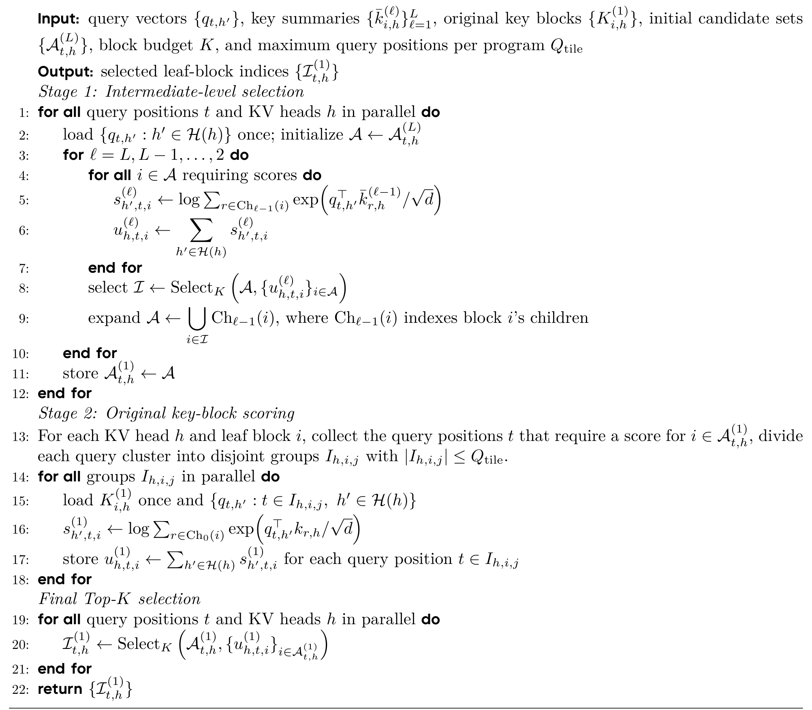
5.1 为什么训练用两阶段、解码用单阶段
论文没有停在"我们的内核很快",而是把两套设计的 IO 成本摆出来对账,这是全文最工程的一节。对单个 KV head,记一个 GQA 组里有 $G_Q$ 个 query head 共享同一个 KV head,键块大小 $C$,query 分块 $Q_{\text{tile}}$。
两阶段(训练/预填充):每个 query 关联至多 $gK$ 个候选键块,加载 query 的 IO 是 $O(NgKG_Qd)$;因为 query 分块并行,每个键块平均被加载
于是两阶段的叶层 Q/K IO 总量是
单阶段要一次走到叶层,每个 query 直接加载至多 $gK$ 个原始键块,额外 IO 为 $O(NgKCd)$(式 14)。两者相比,只要
两阶段就更省。论文的实现取 $G_Q=16$、$Q_{\text{tile}}=4$、$C=64$,代入得 $16+64/4=32<64$,条件成立,因此训练/预填充用两阶段。
解码时结论反过来。解码每步的簇里只有一个 query,没有跨 query 复用的空间:两阶段要加载 $gKC$ 个键、还要把 query 向量重复加载 $gK$ 次,IO 是 $O(gK(C+G_Q)d)$;单阶段可以直接复用中间层选择时已经加载过的 query,额外叶层 IO 只有 $O(gKCd)$。所以解码用单阶段融合内核,省掉重复加载 query 和额外的分组/终选内核启动。
5.2 把配置落到具体层号上
抽象地讲"$O(\log N)$ 层、每层至多 $gK$ 个候选"容易滑过去。把它代进论文自己的两套训练配置(预训练 4K/$\;C=64$、$K=8$;继续预训练 16K/$\;C=64$、$K=32$,见 Table 5 与 §C.1),就能看见这座塔在真实长度上长什么样:
| 层级 $\ell$ | 每块覆盖 token | 候选数 $|A^{(\ell)}|$ | 本层动作 |
|---|---|---|---|
| $\ell=7$(最粗) | 4096 | 1 | 候选数 ≤ $K$,直接全部保留,不打分 |
| $\ell=6$ | 2048 | 2 | 不打分 |
| $\ell=5$ | 1024 | 4 | 不打分 |
| $\ell=4$ | 512 | 8 | 恰好等于 $K$,仍不打分 |
| $\ell=3$ | 256 | 16 | 给 16 个候选打 LSE 分,留 8 |
| $\ell=2$ | 128 | 16 | 给 16 个候选打 LSE 分,留 8 |
| $\ell=1$(叶块) | 64 | 16 | 对 16×64 = 1024 个原始键打分,留 8 块 |
左表为 4K 预训练配置($N=4096$,$C=64$,$K=8$,$g=2$):塔高 $L=\log_2(4096/64)+1=7$ 层。整条选路里真正需要打分的只有 2 个中间层(各 16 个候选),最后对 1024 个原始键打分,选出 8 个叶块 = 512 个键参与注意力。
| 层级 $\ell$ | 每块覆盖 token | 候选数 $|A^{(\ell)}|$ | 本层动作 |
|---|---|---|---|
| $\ell=9$(最粗) | 16384 | 1 | 不打分 |
| $\ell=8$ | 8192 | 2 | 不打分 |
| $\ell=7$ | 4096 | 4 | 不打分 |
| $\ell=6$ | 2048 | 8 | 不打分 |
| $\ell=5$ | 1024 | 16 | 不打分 |
| $\ell=4$ | 512 | 32 | 恰好等于 $K$,仍不打分 |
| $\ell=3$ | 256 | 64 | 给 64 个候选打分,留 32 |
| $\ell=2$ | 128 | 64 | 给 64 个候选打分,留 32 |
| $\ell=1$(叶块) | 64 | 64 | 对 64×64 = 4096 个原始键打分,留 32 块 |
塔高 $L=\log_2(16384/64)+1=9$ 层。最上面 6 层因为候选数不超过 $K=32$ 而完全免费;两个中间层各打分 64 个候选;叶层对 4096 个原始键打分后选出 32 个块 = 2048 个键。
这两张表还顺带解释了一件事:在 4K/8K 这种长度上,PISA 的免费层占了塔的大半,但叶层仍然固定要打分 $gK\cdot C$ 个原始键;而 BSA 此时只需要扫描 $M=N/C$ 个块摘要。当 $N/C$ 还小于 $gKC$ 时,BSA 的账更便宜——这就是下一节 Figure 3 里"4K–16K BSA 更快"的机制性原因。
5.3 其余工程约定
- 强制块与因果掩码:沿用 NSA 在 Flash Linear Attention(Yang & Zhang, 2024)中的默认策略,始终保留第一个、前一个、当前叶块及其祖先路径;预填充时当前块路径上的摘要可能含未来键,这些节点只保留、不用其分数参与排序;注意力内核另行屏蔽块内的未来 token。
- 反向传播:被选中的块索引在反向时固定,梯度只通过被选中的注意力条目流动,不穿过离散的选择决策。
- 解码缓存:金字塔缓存每 KV head 存 $O((N/C)d)$ 个元素,每层容量按固定比例扩容;即使每次扩容都整块拷贝,到长度 $N$ 的累计拷贝成本也只有 $O((N/C)d\log N)$,平均到每个生成 token 仍是 $O(\log N)$。
实验一:语言建模与下游任务
实验规模是 418M / 1.47B / 2.67B 三档,每档用同一套 decoder-only 主干与匹配的训练设置,100B token、序列长度 4096 从零预训练,再做 10B token 的 16K 继续预训练。稀疏方法统一 $C=64$,预训练 $K=8$、继续预训练 $K=32$。先把配置摊开看:
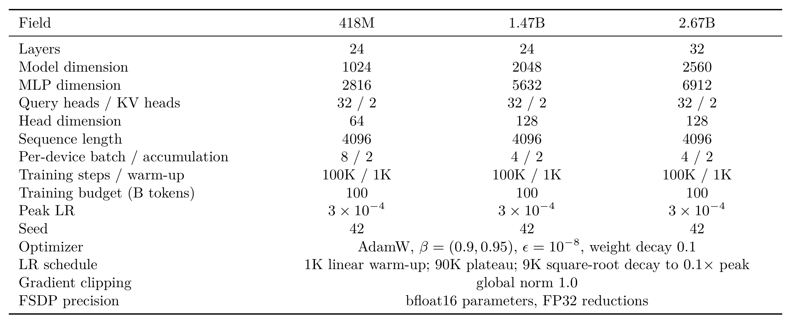
其余未列在这张表里的设置:GPT-2 BPE 分词器(词表 50,257,补齐到 50,432 行)、pre-RMSNorm、SiLU 门控前馈、无 dropout;RoPE 只加在每个注意力头的高频一半维度上,基频 10,000(继续预训练时提到 80,000);继续预训练的 10B token 用 $3\times10^{-5}$ 预热 10% 再余弦衰减到 $3\times10^{-6}$,恢复模型参数与 Adam 优化器状态,packed 输入保留文档边界、不跨文档注意力。
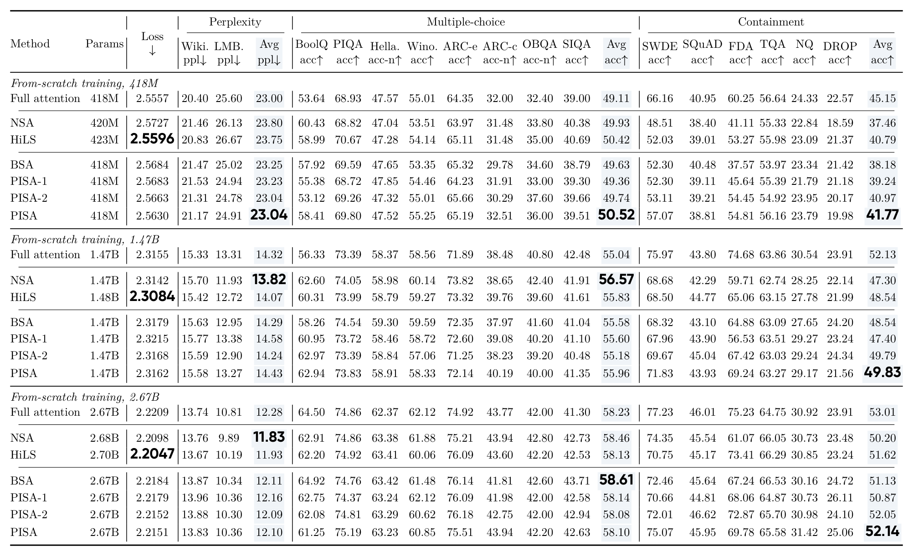
有一点必须照着原文的加粗位置说清楚,否则很容易读错:这张表里"最佳稀疏 loss"的加粗并不在 PISA 行,而在 HiLS 行(2.5596 / 2.3084 / 2.2047 三档都是)。论文正文的措辞也精确地避开了这一点——原话是 PISA "在三个规模上训练损失低于 PISA-1、PISA-2 和 BSA",而不是"低于所有稀疏方法"。事实核对如下(整理自 Table 2):
| 规模 | PISA | BSA | PISA-1 | PISA-2 | HiLS | NSA | 论文加粗者 |
|---|---|---|---|---|---|---|---|
| 418M | 2.5630 | 2.5684 | 2.5683 | 2.5663 | 2.5596 | 2.5727 | HiLS |
| 1.47B | 2.3162 | 2.3179 | 2.3215 | 2.3168 | 2.3084 | 2.3142 | HiLS |
| 2.67B | 2.2151 | 2.2184 | 2.2179 | 2.2152 | 2.2047 | 2.2098 | HiLS |
PISA 相对 BSA 的 loss 优势在三个规模上分别是 0.0054 / 0.0017 / 0.0033(本页相减,推算);相对 PISA-1/PISA-2 也一致更低,但幅度都在千分位。同一张表里 PISA 拿到加粗的是三个规模的 containment 均值,以及 418M 档的困惑度均值(23.04,与 PISA-2 并列)与 Acc-8 均值(50.52)。
继续预训练(CPT)之后的口径变化值得单独提醒,因为这里有一个很容易踩的坑:
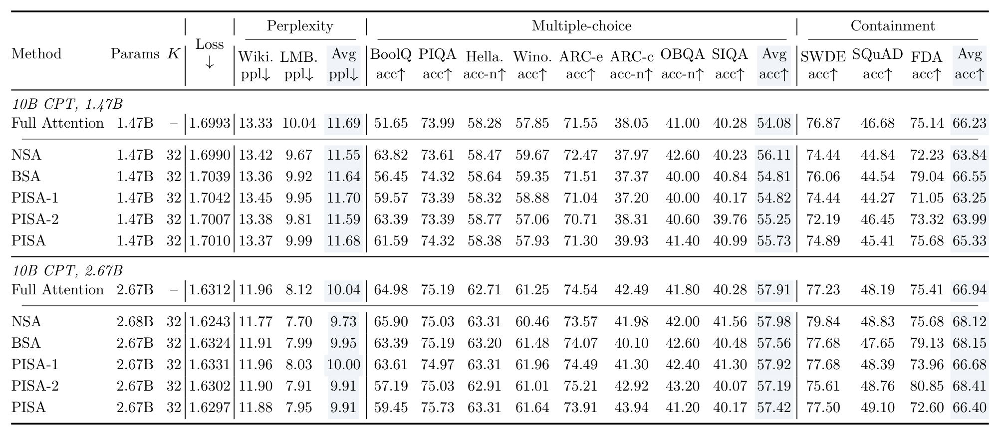
实验二:长上下文检索、选择质量与选择效率
7.1 RULER 大海捞针
长上下文用 RULER(Hsieh et al., 2024)的四个 needle-in-a-haystack 家族评测:单键、多键、多 query、多值,在 1K 到 16K 五个长度上贪心解码,用的是 16K 继续预训练后的 2.67B 模型。
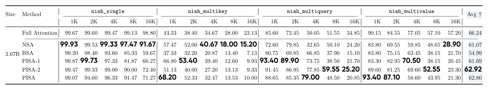
把 Table 3 里 16K 那一列单独摊平,能更清楚看到"谁在哪里更强"(对四个家族取算术平均,数据取自 Table 3,推算):PISA 30.86、PISA-2 32.56、PISA-1 28.09 均高于 BSA 的 25.90,但都低于 NSA 的 39.99 与 Full Attention 的 53.50。也就是说,PISA 相对 BSA 的检索优势在 16K 处仍然成立,但它并不是这一列的最强者。
7.2 选择质量诊断
这一节回答的是"金字塔 + LSE 到底选得准不准"。实验设计很干净:拿一个 418M 的全注意力模型(100B token 预训练),用同一份 query/key 张量,让各选择器各自选 $K=8$ 个块,然后和全注意力权重导出的参考集对比;24 层全用,$C=64$,100 条 FDA prompt,只看 query 位置 $\ge 512$(此时可选的块超过 8 个)。两个指标分别是集合重合度 Recall@K 和保留注意力质量占比 MassRatio。
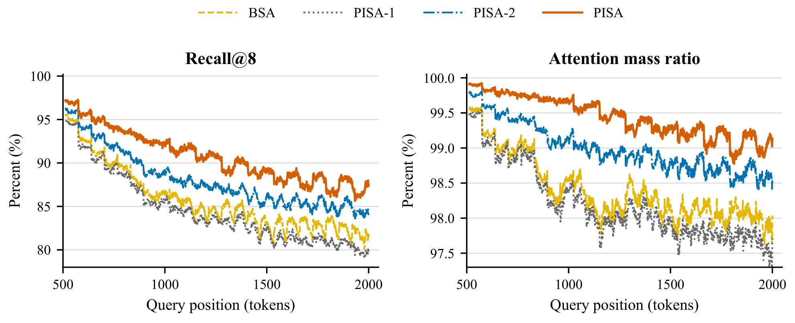
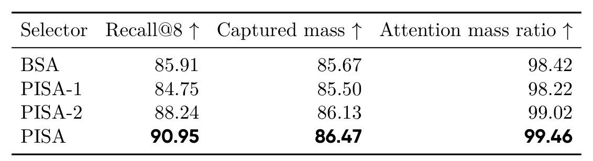
7.3 选择延迟
最后是效率。评测对象是选块这一个阶段的延迟:随机 BF16 的 query/key、batch 1、32 个 query head、2 个 KV head、$d=64$、$C=64$、$K=8$、$g=2$,点积在 FP32 累加,计时包含均值摘要构建与全部选择阶段,不含被选中块上的稀疏注意力计算。
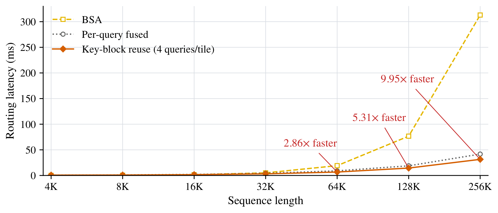
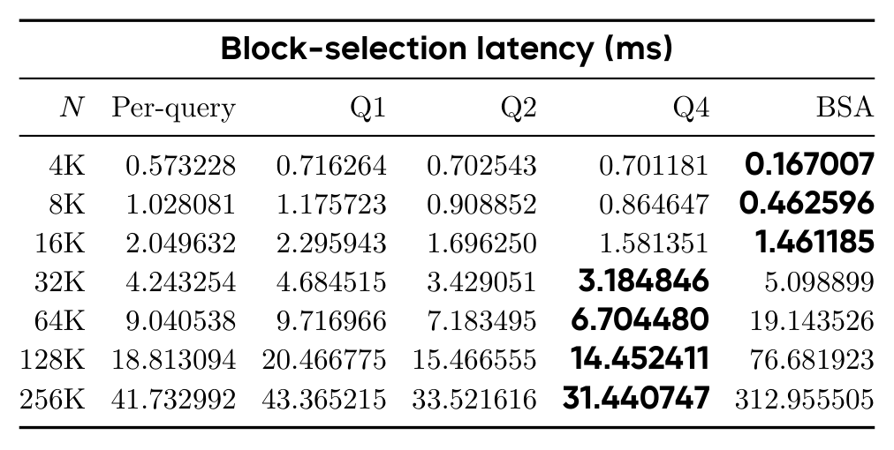
补充与点评:技术来源、边界与未披露项
8.1 局限(论文自述)
论文的 Limitations 只有一段,内容非常克制:计算资源限制了所探索的模型规模与预训练数据预算,而这两者都会显著影响性能以及相对基线的增益;在已评测的配置内,核心结论——金字塔块选择在保持竞争力的同时降低了选择复杂度——成立。除此之外论文没有自述其他局限。
8.2 技术来源一览
把论文里每个组件对应的上游标注单独整理出来,能更清楚看出哪些是继承、哪些是本代改造:
| 组件 | 论文标注的上游 | 本代的改造 / 集成 |
|---|---|---|
| 两阶段块稀疏框架(选块 + 选中块上算注意力) | BSA 通用范式,论文归到 MoBA(Lu et al., 2025)与 NSA(Yuan et al., 2025) | 沿用两阶段划分;第一阶段由"平铺扫全部块"改为"金字塔逐层收窄" |
| 池化块摘要用于选择 | MoBA(Lu et al., 2025)、InfLLM-V2(Zhao et al., 2025)的 query-dependent 摘要 | 不只用叶块摘要,而是把它扩展成 $O(\log N)$ 层的摘要金字塔 |
| 多级 / 由粗到细选择 | HiP(Lee et al., ICLR 2025,免训练)在多级上重复选择;LLSA(Zhou et al., CVPR 2026)为扩散 Transformer 做层次 Top-K | 首次把它做成可训练的语言模型注意力层,并补上解码路径的 $O(\log N)$ 论证 |
| 块打分函数 | 无直接上游(BSA/NSA 类方法用摘要点积或均值) | 改为子块摘要上的 LogSumExp;附录 A 用 Jensen 不等式给出"均值平均 ≤ 摘要 LSE ≤ 父块真实 LSE"的夹逼论证,并派生出 PISA-1/PISA-2 两个泰勒截断变体 |
| GQA 组内共享选择 | NSA(Yuan et al., 2025) | 沿用;把组内各 query head 的 LSE 分求和(附录 A.3 指出这与诊断中参考集的"取平均"口径不一致,可能产生不同排序) |
| 强制块策略(首块 / 前一块 / 当前块)与解码单阶段结构 | 沿用 NSA 在 Flash Linear Attention(Yang & Zhang, 2024)中的默认实现 | 沿用掩码与强制块语义;解码把中间层与叶层融合进单个内核 |
| 训练 / 预填充的两阶段 Triton 内核与键块复用 | 本文工作 | Stage 1 融合全部中间层、候选索引不出内核;Stage 2 按 (KV head, 叶块) 聚簇、每个键块只加载一次服务至多 4 个 query |
| 评测协议 | lm-evaluation-harness(Biderman et al., 2023)、BASED / JRT(Arora et al., 2024)的 containment 实现、RULER(Hsieh et al., 2024) | 全套沿用;containment 用前三个任务(或六个,见 Table 2 与 Table 6 的口径差) |
8.3 未披露、值得补测的点
- 端到端速度与吞吐。Figure 3 与 Table 4 测的都是选块阶段的延迟,并明确排除被选中块上的稀疏注意力计算;全文未给出训练/推理的步时、tokens/s 或端到端加速比,也未给出显存占用实测。因此"9.95× 更快"是选择阶段的口径,不能直接当作端到端收益。评测硬件型号也未披露(全文未提 GPU 型号)。
- 64K 以上的建模质量。256K 长度只出现在选块延迟微基准里,用的是随机 query/key,没有真实模型在 64K–256K 上的困惑度或检索评测。而 PISA 的复杂度优势恰恰要到这些长度才显现,所以"长序列更快"有实测支撑,"长序列仍然好用"目前只有 16K 以内的证据。
- 金字塔的维护开销未单独计量。计时已包含摘要构建,但除 Figure 3 这一项外,论文没有报告金字塔缓存在训练与解码中的额外显存、也没有与 BSA 做显存对比。摘要金字塔每 KV head 是 $O((N/C)d)$ 元素,量级不大,但缺实测。
- 单种子,无误差棒。三个规模的训练与评测都固定 seed 42,Table 2/3/6 的差异多在千分位到个位数百分点之间(例如 RULER 总平均 PISA 62.80 vs PISA-2 62.92 vs NSA 61.07),未做重复实验或显著性检验,小差距的稳定性待观察。
- 基线覆盖范围。可训练对照组只有 BSA、NSA、HiLS 三家。Table 1 中列入的 MoBA(Lu et al., 2025)与参考文献里的 SeerAttention、IndexCache、LongCat、InfLLM-V2 等均未参与实测;免训练方法是否能在同长度上给出更低延迟也未对照。
- LSE 与截断近似的胜负并不一致。完整 PISA 在 Table 7 诊断(PISA 90.95 vs PISA-2 88.24)与 Table 2 损失上都胜出,但在 Table 3 的 RULER 总平均上是 PISA-2(62.92)略高于 PISA(62.80)。论文未讨论这一反转;若要主张"精确 LSE 更好",RULER 这一项需要补充说明或重复验证。
- 强制块对诊断指标的贡献。Recall@8 里含三个必然命中的强制块,论文在 Figure 2 图注中如实标注了这一点,但未给出剔除强制块后的净 Recall,读者难以直接判断"8 个槽位里有 3 个是送的"之后选择器自身的命中率。
8.4 总体评价
贡献的实质。块稀疏注意力的选择阶段是二次的这个瓶颈,在长上下文系统里是真实存在的工程问题,而这篇论文给出的是一个结构清晰、代价可分析的解法:用池化建塔把"扫全部块"换成"逐层收窄"。$O(N\log N)$ 这个复杂度本身在此之前已经有免训练方法(HiP)和扩散模型方法(LLSA)触及,所以本文的核心增量在于三处:把层次化选择做进可训练的语言模型注意力层、把块打分从均值换成 LSE 并给出夹逼论证、以及把训练/预填充与解码的 IO 账本算清楚并落成两套 Triton 内核。第三点尤其扎实——式(13)(15)那种"代入 $G_Q=16$、$Q_{\text{tile}}=4$、$C=64$ 看不等式成不成立"的写法,比常见的"我们的内核经过充分优化"要有信息量得多。
证据的强度。实验的分工是清楚的:建模质量用三个规模和 100B+10B token 的训练来支撑,选择质量用同一份张量上的对照诊断来支撑,选择效率用 4K–256K 的微基准来支撑。三块证据各自都能自圆其说,但拼起来并不构成"PISA 全面更优"的结论:损失被 HiLS 压着,单键检索被 NSA 压着,RULER 总平均被自家的 PISA-2 压着,继续预训练后的 containment 被 BSA 压着,16K 以内选块延迟被 BSA 压着。PISA 真正的、在所有实验里都成立的强项只有两项:六个 containment 任务的均值(预训练阶段,三个规模全部最高),以及 32K 以上的选块延迟(64K 起 2.86×,256K 到 9.95×)。论文摘要的措辞("常识推理相当、检索更好")基本对应这两项,没有过度外推,这一点是诚实的。
适用边界。这套机制的价值随序列长度增长,在 16K 以内它甚至更慢;它的设计目标场景是长上下文预填充与长序列解码。如果读者的部署长度在 4K–16K,这篇论文给不出采用理由;如果落在 64K 以上,那么"选择阶段随长度二次增长"这件事确实会被这张方法解决掉,而它的质量代价在 16K 的实验里看起来是可以接受的。
还没有回答的问题。最关键的一个是:选块阶段快 10 倍,端到端快多少?这取决于被选中块上的稀疏注意力计算占比。论文没有测,因此这项收益能兑现多少仍是开放问题。次关键的是:金字塔维护的显存与拷贝开销在真实训练循环里是否真的可以被 $O(\log N)$ 平摊吸收,以及 64K 以上质量是否守得住——这两点都需要超出本文配置的实测。
术语速查
阅读中遇到缩写,可随时回到这里;正文里的缩写也可悬停查看释义。
| 缩写 | 全称 | 一句话解释 |
|---|---|---|
| PISA | Pyramid Sparse Attention | 本文提出的块稀疏注意力:金字塔键层级 + 由粗到细的逐层 Top-K 选择。 |
| BSA | Block Sparse Attention | 块稀疏注意力的通称;本页中特指论文的对照组——用均值池化摘要做单层 Top-K 选择的基线。 |
| Top-K 选择 | Top-K Selection | 从候选块里保留分数最高的 $K$ 个。$K$ 是块预算,论文预训练取 8、继续预训练取 32。 |
| LSE | LogSumExp | $\log\sum_j e^{z_j}$。注意力权重归一化里的分母,也是"一个块对 query 有多重要"的连续度量。 |
| 叶块 | Leaf Block | 金字塔第 1 层,$C$ 个相邻原始键合成一块,是真正参与注意力计算的单位。 |
| 分支因子 $g$ | Branching Factor | 上一层多少个块合成上一层的一个块。论文中 $g_0=C$、$g_\ell=2$($\ell\ge1$)。 |
| GQA | Grouped-Query Attention | 多个 query head 共享一个 KV head(Ainslie et al., 2023)。本文中同组 query head 共享同一组被选中的块。 |
| $G_Q$ | Query heads per KV head | 一个 KV head 对应的 query head 数。论文配置为 32/2,故 $G_Q=16$。 |
| $Q_{\text{tile}}$ | Query tile size | Stage 2 里每个键块一次复用服务的 query 数上限,论文取 4。 |
| PISA-1 / PISA-2 | First- / Second-order variants | 把 LSE 泰勒展开分别截断到一阶(仅均值)和二阶(均值 + 半个方差)的消融变体。 |
| CPT | Continued Pre-Training | 继续预训练。本文在 4K 预训练之后用 10B token 把序列长度扩到 16K、$K$ 扩到 32。 |
| RoPE | Rotary Position Embedding | 旋转位置编码。本文只加在每个头的高频一半维度上,继续预训练时基频从 10,000 提到 80,000。 |
| FSDP | Fully Sharded Data Parallel | 全分片数据并行。本文用 bfloat16 参数 + FP32 归约。 |
| RULER | — | 长上下文评测套件(Hsieh et al., 2024)。本文用其中四个大海捞针家族,1K–16K 五个长度。 |
| Containment | Containment Accuracy | 生成结果只要包含任一标准答案(不分大小写的字面子串)即判对,用于检索类任务。 |
| Recall@K | — | 选出块与全注意力参考块的重合比例,含三个强制块。Table 7 中 PISA 为 90.95%。 |
| Attention mass ratio | 注意力质量比 | 选出块覆盖的注意力质量 ÷ 参考集覆盖的质量。Table 7 中 PISA 为 99.46%。 |
| Triton | — | 面向 GPU 的类 Python 内核编程语言,本文的训练/预填充与解码内核均用它实现。 |